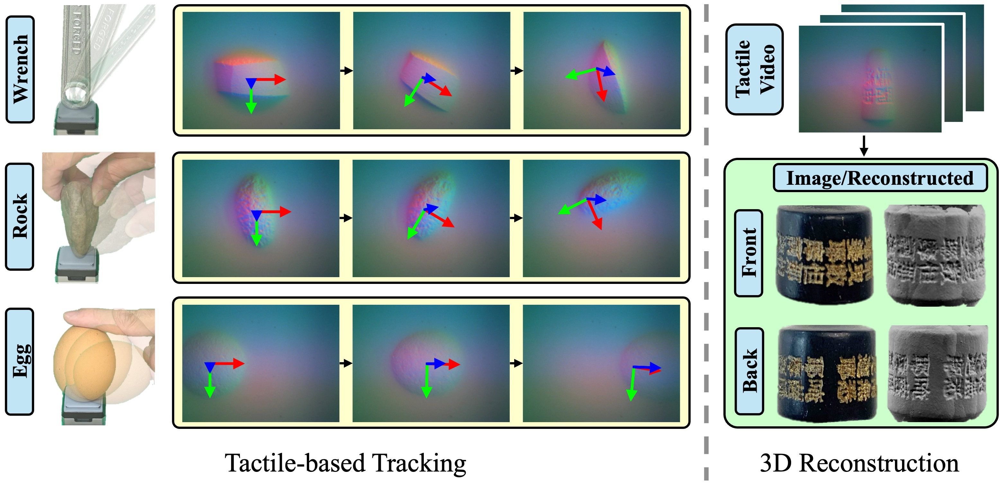
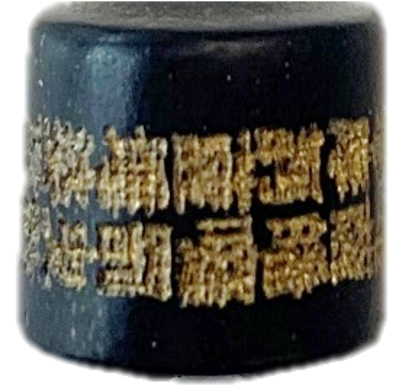
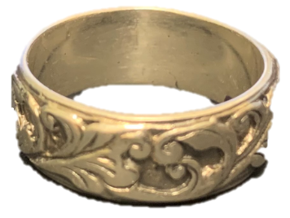

TL;DR: Real-time, robust, and accurate tactile-based tracking for novel objects, including low-textured ones like ping pong balls and eggs. Useful for manipulation, in-hand manipulation, and 3D reconstruction tasks.

Tactile sensing is crucial for robots aiming to achieve human-level dexterity. Among tactile-dependent skills, tactile-based object tracking serves as the cornerstone for many tasks, including manipulation, in-hand manipulation, and 3D reconstruction.
In this work, we introduce NormalFlow, a fast, robust, and real-time tactile-based 6DoF tracking algorithm. Leveraging the precise surface normal estimation of vision-based tactile sensors, NormalFlow determines object movements by minimizing discrepancies between the tactile-derived surface normals.
Our results show that NormalFlow consistently outperforms competitive baselines and can track low-texture objects like ping pong balls and eggs. For long-horizon tracking, we demonstrate when rolling the sensor around a bead for 360 degrees, NormalFlow maintains a rotational tracking error of 2.5 degrees. Additionally, we present state-of-the-art tactile-based 3D reconstruction results, showcasing the high accuracy of NormalFlow. We believe NormalFlow unlocks new possibilities for high-precision perception and manipulation tasks that involve interacting with objects using hands.
Got a GelSight Mini? Install the Code and run NormalFlow live!
We demonstrate NormalFlow tracking a wide variety of objects, including objects like ping pong balls, which are typically considered texture-less by human standards. NormalFlow can leverage subtle surface textures to robustly track these challenging objects. Quantitatively, it significantly outperforms all existing competitive baseline methods. For further details, please refer to our paper.


To demonstrate the power of NormalFlow, we apply it to tactile-based 3D reconstruction. Leveraging NormalFlow's high precision, our reconstructed geometry achieves outstanding quality, accurately capturing fine details of the object.
For long-horizon tracking, we propose an effective keyframe selection strategy to minimize drift.
We present a benchmark dataset for tactile-based object tracking, featuring 12 distinct objects and 84 tracking trials—7 trials per object, each lasting an average of 10.2 seconds.
@ARTICLE{huang2024normalflow,
author={Huang, Hung-Jui and Kaess, Michael and Yuan, Wenzhen},
journal={IEEE Robotics and Automation Letters},
title={NormalFlow: Fast, Robust, and Accurate Contact-based Object 6DoF Pose Tracking with Vision-based Tactile Sensors},
year={2024},
volume={},
number={},
pages={1-8},
doi={10.1109/LRA.2024.3505815}
}